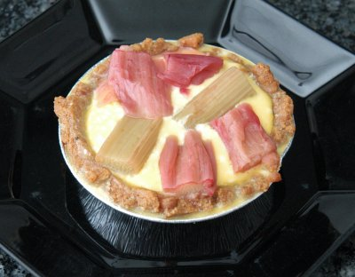

| Zutaten für 6 kleine Pieförmchen von 11 cm Durchmesser: | |
| Teig: | |
| 150 g | Petit Beurre |
| 75 g | Süssrahmbutter |
| 2-3 El | Ahornsirup |
| Guss: | |
| 2 Pkg | Doppelrahmfrischkäse Delissy à 125 g |
| 2 | Eier |
| 2 | Eigelb |
| 4 El | gezuckerte Kondensmilch |
| 1 kl | Stück in Sirup eingelegten Ingwer |
| Belag: | |
| 300 g | Rhabarber |
| 50 g | Zitronengelée |
Für den Teig die Biskuits in einen Plastikbeutel geben und mit dem Wallholz bearbeiten oder im Cutter mahlen.
In einem Pfännchen die Butter schmelzen. Ahornsirup und Biskuitbrösel beifügen und mischen, bis eine homogene Masse entsteht. Von Hand in die Förmchen verteilen, dabei den Rand genügend hochziehen. Zehn Minuten kalt stellen. Den Backofen auf 200°C vorheizen.
Für den Guss den Doppelrahmfrischkäse mit Eiern, Eigelb, Kondensmilch und fein gehacktem Ingwer glatt rühren. In die Förmchen giessen. Den Backofen auf 175°C zurückschalten und die Törtchen auf der untersten Rille 15 Minuten stocken lassen.
In der Zwischenzeit den Rhabarber wenn nötig fädeln, in zwei Zentimeter lange Stücke schneiden. Im Dampfkörbchen drei bis fünf Minuten dämpfen. Dann auskühlen lassen.
Nach 14 Minuten Backzeit den Rhabarber auf dem Guss verteilen und die Törtchen weitere 10 Minuten in den Ofen zurückschieben.
In einem Pfännchen den Zitronengelée erwärmen. Falls nötig mit einem bis zwei Esslöffel Wasser oder Ingwersirup (von den eingelegten Ingwerstücken) verdünnen. Die noch lauwarmen Törtchen damit bepinseln. Kalt servieren.
Eierguss: 4 Eier mit 2.5 dl Rahm, 4 El Zucker, etwas Zimt oder Vanillinzucker und 2 El Puderzucker verrühren.
Quarkguss: 2 Eier mit 2 dl Milch, 4 El Zucker, Zimt oder Vanillinzucker, 1 El Maispuder und 100 g Quark verrühren. Oder Eier durch Sojamehl ersetzen (1 Ei = 1 El Sojamehl).
Tofuguss: 2 Eier mit 2 dl Sojamilch, 2 El Birnendicksaft, wenig Zitronenschale und 100 g geriebenem Tofu verrühren.
Fruchtguss: 2 Eier mit 2 dl aufgetautem Orangensaftkonzentrat, wenig Zitronenschale, 4 El Kondensmilch und 200 g Crème Fraîche verrühren. Anstelle von Kondensmilch und Crème Fraîche 100 g Marzipanmasse oder Mandelpüree verwenden. Oder Crème Fraîche durch Kokosnuss Extrakt ersetzten.
Brückenbauer Nr 12, 22.3.95, Seite 22.
Hat am 13.4.2008 ganz gut geschmeckt. Ist allerdings aufwendig in der Herstellung. Die Petit Beurres unbedingt im Cutter zerhacken um einen Teig herzustellen. (Mir platze die Tüte.... Macht nichts, ich habe einen Dyson....) Den Rhabarber nicht zu lange Dämpfen. Der ist empfindlich. Statt Delissy nahm ich Philadelphia. Butter nahm ich normale. RE
@LINKBACK_TAG@ @WAKELOCK@